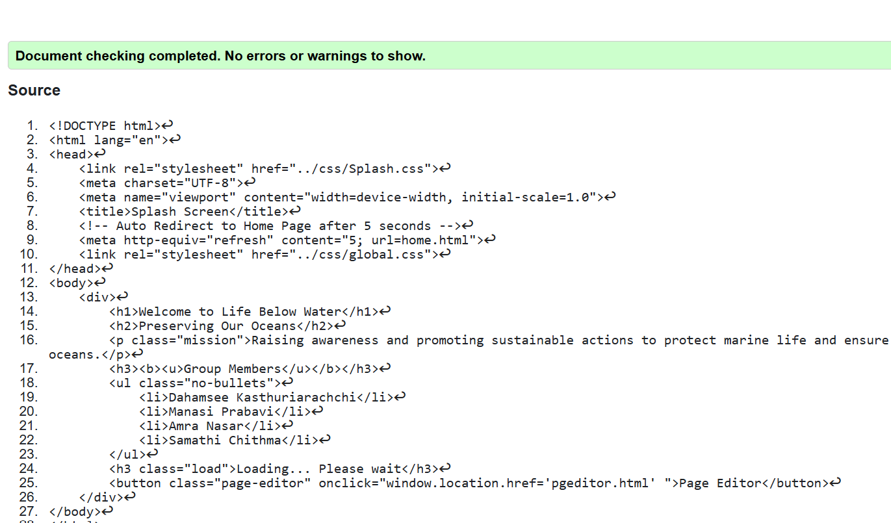
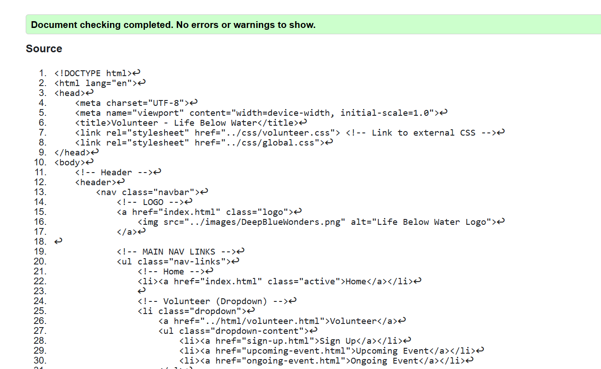
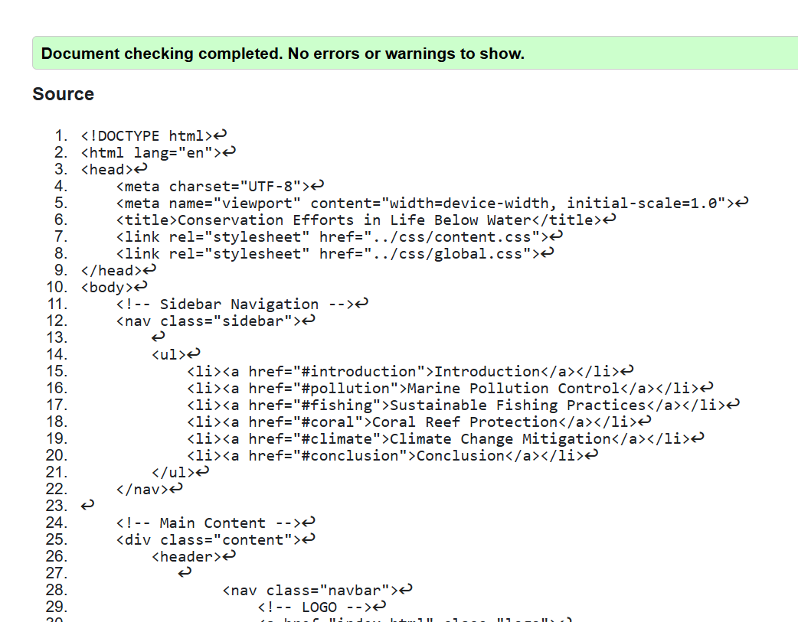

Splash Page
The validation report for splash.html indicates that the page is well-structured, with proper HTML syntax, semantic elements, and effective CSS integration, ensuring a visually appealing and accessible design. Key features like the auto-redirect functionality and clear mission statement enhance user experience. However, minor improvements are suggested, such as adding alt attributes for future images, moving inline JavaScript to external files, and directly applying the no-bullets class to the <'ul'> element for better compatibility. Addressing these recommendations will further refine the page, ensuring it adheres to web standards and provides an optimal user experience.

Back to Page Editor page
Volunteer Page
The validation report for volunteer.html highlights a well-structured and functional webpage with proper HTML syntax, semantic elements, and effective use of external CSS for styling. The page features a responsive design, accessible navigation with dropdown menus, and interactive elements like cards and a feedback form. However, the report identifies minor issues, such as the need for alt attributes on all images for better accessibility and the recommendation to move inline styles to external CSS for improved maintainability. Addressing these suggestions will further enhance the page's compliance with web standards and ensure a seamless user experience. Overall, the page is well-implemented, with only minor refinements needed to meet best practices.

Back to Page Editor page
Content Page
The validation report for content.html highlights a well-structured webpage with proper HTML syntax and effective use of external CSS for styling. The page includes a consistent header and footer, along with a clear navigation system and accessible links. However, the report identifies minor issues, such as redundant <'header'> tags and the need for alt attributes on images to improve accessibility. Addressing these suggestions will enhance the page's compliance with web standards and ensure a better user experience. Overall, the page is well-implemented, with only minor refinements needed to meet best practices.
